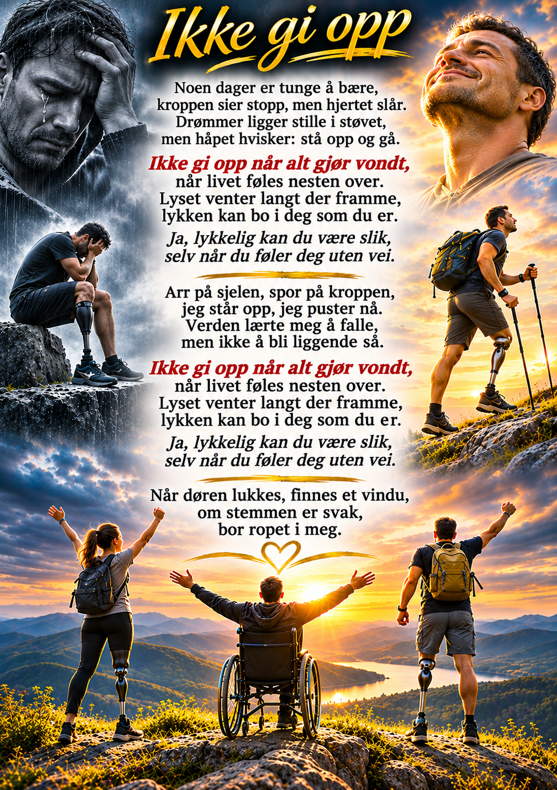
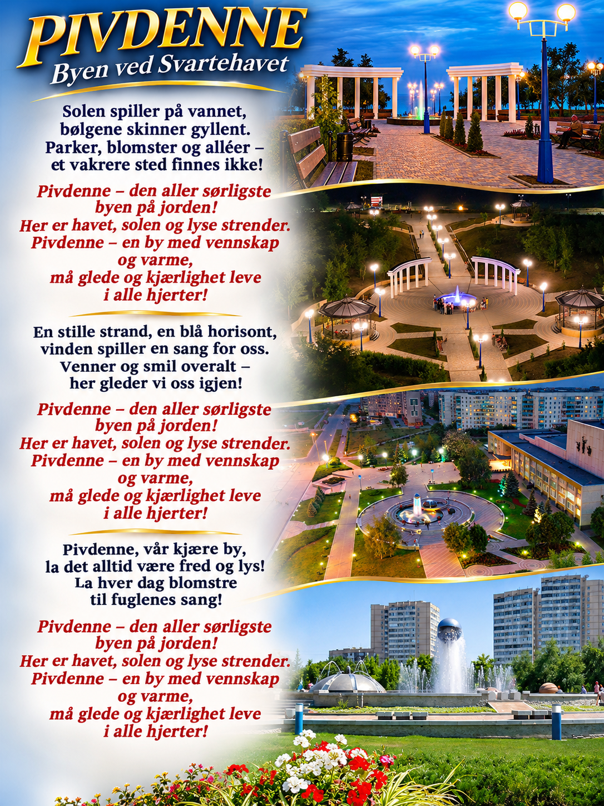

Hvordan høres det ut?
02 Ikke gi opp
Se sangteksten

03 Pivdenne
Se sangteksten

Om SKYSTORM
SKYSTORM er et familieprosjekt med egenkomponert musikk, som har sin helt egen musikalske stil skapt gjennom en kreativ sammensmelting av flere ulike musikksjangre. Gruppen består av Oleksandr Talakh på gitar, duduk, shofar og vokal, samt Kseniia Len og Yuliia Len på fiolin. Gruppen kommer opprinnelig fra Ukraina, nærmere bestemt byen Pivdenne i Odesa-regionen, som ligger ved Svartehavskysten. De kom til Norge i mai 2024 og er nå bosatt i Heim kommune.
Den unike musikkstilen ble født her i Norge, og vår største drøm er at hver eneste lytter skal kunne finne noe nært, kjent og personlig i musikken vår – noe som berører hjertet og vekker egne følelser og minner. Vi fremfører også ukrainsk folkemusikk med særpreg og musikalske tradisjoner fra Odesa-regionen. Gjennom denne musikken ønsker vi å bevare forbindelsen til våre røtter og hjemlandet Ukraina, som vi savner dypt.